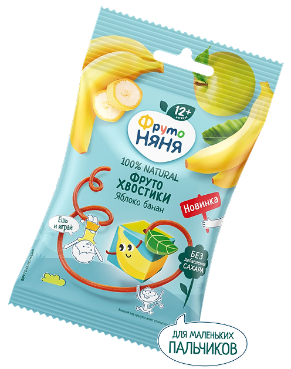

Полезные перекусы для самых маленьких
Фруктовый мармелад с яблоком и бананом, 15 г
ФрутоХвостики с яблоком и бананом — мармелад для малышей от 12 месяцев. Он разнообразит рацион и поможет развить мелкую моторику. В составе — натуральные фруктовые пюре и соки без добавления сахара.
